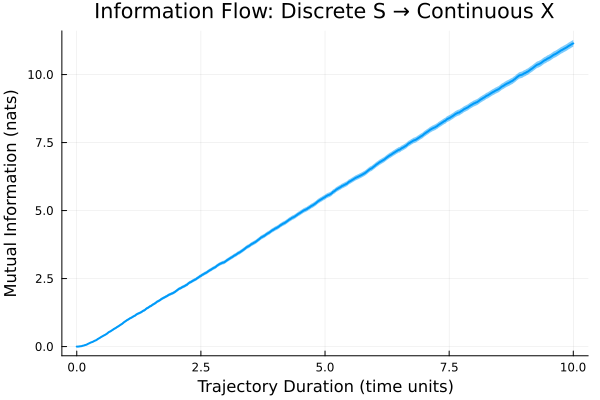
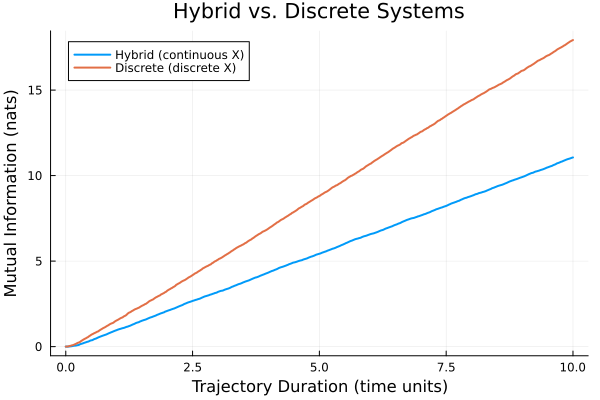

Hybrid Continuous-Discrete System Tutorial
This tutorial demonstrates how to analyze information flow in a hybrid stochastic system that combines continuous dynamics (described by stochastic differential equations) with discrete jump events. This is particularly relevant for biological systems where some species evolve continuously while others change through discrete reactions.
The Hybrid Model
We consider a two-species system where:
- S (input signal) undergoes discrete birth-death reactions
- X (output signal) evolves continuously via a stochastic differential equation (SDE)
The system dynamics are:
Discrete reactions for S:
Reaction 1: ∅ → S (rate κ) # S production
Reaction 2: S → ∅ (rate λ·S) # S degradationContinuous dynamics for X:
dX/dt = ρ·S - μ·X + noisewhere the noise term accounts for molecular fluctuations in X production.
This represents a common motif in cellular signaling where:
- S represents a discrete molecular species (e.g., transcription factors)
- X represents a continuous observable (e.g., protein concentration)
- Information flows from discrete S to continuous X
Setting Up the System
First, let's define the continuous dynamics using SDE functions:
import PathWeightSampling as PWS
using StaticArrays
using Plots
using Statistics
using DataFrames
using StochasticDiffEq
# Parameters
κ = 50.0 # S production rate
λ = 1.0 # S degradation rate
ρ = 10.0 # X production rate (per S molecule)
μ = 10.0 # X degradation rate
ps = (κ, λ, ρ, μ)
# Deterministic evolution function for SDE
# u[1] = S, u[2] = X
function det_evolution(u, p, t)
κ, λ, ρ, μ = p
SA[
0.0, # S evolves via discrete jumps only
ρ*u[1] - μ*u[2] # X dynamics: production from S, degradation
]
end
# Noise function for SDE (diffusion term)
function noise_term(u, p, t)
κ, λ, ρ, μ = p
SA[
0.0, # No continuous noise for S
sqrt(2ρ * κ / λ) # Multiplicative noise for X
]
end
# Initial conditions at equilibrium
u0 = SA[κ / λ, κ * ρ / λ / μ]
# Time span
tspan = (0.0, 10.0)
# Create SDE problem
sde_prob = SDEProblem(det_evolution, noise_term, u0, tspan, ps)Defining Discrete Reactions
Now we specify the discrete jump reactions for S:
# Reaction rates
rates = [κ, λ]
# Reactant stoichiometry
# Reaction 1: ∅ → S (no reactants)
# Reaction 2: S → ∅ (1 S molecule)
rstoich = [
Pair{Int, Int}[], # No reactants for birth
[1 => 1] # 1 molecule of species 1 (S)
]
# Net stoichiometry changes
nstoich = [
[1 => 1], # +1 S
[1 => -1] # -1 S
]
# Create reaction set
reactions = PWS.ReactionSet(rates, rstoich, nstoich, [:S, :X])Creating the Hybrid System
Now we combine the continuous and discrete dynamics:
# Create hybrid continuous-discrete system
system = PWS.HybridContinuousSystem(
PWS.GillespieDirect(), # Algorithm for discrete jumps
reactions, # Discrete reactions
u0, # Initial condition
tspan, # Time span
0.02, # Observation time step (dt)
sde_prob, # SDE problem for continuous evolution
0.01, # SDE integration time step
:S, # Input species
:X, # Output species
[1 => 1] # Coupling: species 1 (S) affects the SDE
)PathWeightSampling.ContinuousSystem.HybridContinuousSystem{PathWeightSampling.SSA.DirectAggregator{StaticArraysCore.SVector{2, Float64}, PathWeightSampling.SSA.ZeroArray, Nothing}, PathWeightSampling.SSA.ReactionSet{Vector{Float64}, Vector{Vector{Pair{Int64, Int64}}}, Vector{Vector{Pair{Int64, Int64}}}}, StaticArraysCore.SVector{2, Float64}, SciMLBase.SDEProblem{StaticArraysCore.SVector{2, Float64}, Tuple{Float64, Float64}, false, NTuple{4, Float64}, Nothing, SciMLBase.SDEFunction{false, SciMLBase.FullSpecialize, typeof(Main.det_evolution), typeof(Main.noise_term), LinearAlgebra.UniformScaling{Bool}, Nothing, Nothing, Nothing, Nothing, Nothing, Nothing, Nothing, Nothing, Nothing, Nothing, Nothing, typeof(SciMLBase.DEFAULT_OBSERVED), Nothing, Nothing, Nothing}, typeof(Main.noise_term), Base.Pairs{Symbol, Union{}, Nothing, @NamedTuple{}}, Nothing}}(PathWeightSampling.SSA.DirectAggregator{StaticArraysCore.SVector{2, Float64}, PathWeightSampling.SSA.ZeroArray, Nothing}([50.0, 50.0], 0.0, [0.0, 0.0], 0.0, Float64[], BitSet([1, 2]), BitSet([1, 2]), PathWeightSampling.SSA.ZeroArray(), (0.0, Inf), 0.0, 0.0, 1, 0.0, nothing, Random.Xoshiro(0x2e3b4bbaa22f4a18, 0x9c46ddf1b0362093, 0x1efddd99f3c345e3, 0x1ad002b230b4b8c5, 0x59b54c70ca9316a3)), PathWeightSampling.SSA.ReactionSet{Vector{Float64}, Vector{Vector{Pair{Int64, Int64}}}, Vector{Vector{Pair{Int64, Int64}}}}([50.0, 1.0], [Pair{Int64, Int64}[], [1 => 1]], [[1 => 1], [1 => -1]], [:S, :X]), [50.0, 50.0], (0.0, 10.0), 0.02, SciMLBase.SDEProblem{StaticArraysCore.SVector{2, Float64}, Tuple{Float64, Float64}, false, NTuple{4, Float64}, Nothing, SciMLBase.SDEFunction{false, SciMLBase.FullSpecialize, typeof(Main.det_evolution), typeof(Main.noise_term), LinearAlgebra.UniformScaling{Bool}, Nothing, Nothing, Nothing, Nothing, Nothing, Nothing, Nothing, Nothing, Nothing, Nothing, Nothing, typeof(SciMLBase.DEFAULT_OBSERVED), Nothing, Nothing, Nothing}, typeof(Main.noise_term), Base.Pairs{Symbol, Union{}, Nothing, @NamedTuple{}}, Nothing}(SciMLBase.SDEFunction{false, SciMLBase.FullSpecialize, typeof(Main.det_evolution), typeof(Main.noise_term), LinearAlgebra.UniformScaling{Bool}, Nothing, Nothing, Nothing, Nothing, Nothing, Nothing, Nothing, Nothing, Nothing, Nothing, Nothing, typeof(SciMLBase.DEFAULT_OBSERVED), Nothing, Nothing, Nothing}(Main.det_evolution, Main.noise_term, LinearAlgebra.UniformScaling{Bool}(true), nothing, nothing, nothing, nothing, nothing, nothing, nothing, nothing, nothing, nothing, nothing, SciMLBase.DEFAULT_OBSERVED, nothing, nothing, nothing), Main.noise_term, [50.0, 50.0], (0.0, 10.0), (50.0, 1.0, 10.0, 10.0), nothing, Base.Pairs{Symbol, Union{}, Nothing, @NamedTuple{}}(), nothing, 0x0000000000000000), 0.01, BitSet([1, 2]), SciMLBase.DiscreteCallback{PathWeightSampling.ContinuousSystem.var"#SSACallback##0#SSACallback##1"{PathWeightSampling.SSA.DirectAggregator{StaticArraysCore.SVector{2, Float64}, PathWeightSampling.SSA.ZeroArray, Nothing}}, PathWeightSampling.ContinuousSystem.var"#SSACallback##2#SSACallback##3"{PathWeightSampling.SSA.DirectAggregator{StaticArraysCore.SVector{2, Float64}, PathWeightSampling.SSA.ZeroArray, Nothing}, PathWeightSampling.SSA.ReactionSet{Vector{Float64}, Vector{Vector{Pair{Int64, Int64}}}, Vector{Vector{Pair{Int64, Int64}}}}, Vector{Pair{Int64, Int64}}}, PathWeightSampling.ContinuousSystem.var"#SSACallback##4#SSACallback##5"{PathWeightSampling.SSA.DirectAggregator{StaticArraysCore.SVector{2, Float64}, PathWeightSampling.SSA.ZeroArray, Nothing}, PathWeightSampling.SSA.ReactionSet{Vector{Float64}, Vector{Vector{Pair{Int64, Int64}}}, Vector{Vector{Pair{Int64, Int64}}}}}, typeof(SciMLBase.FINALIZE_DEFAULT), Nothing, Tuple{}}(PathWeightSampling.ContinuousSystem.var"#SSACallback##0#SSACallback##1"{PathWeightSampling.SSA.DirectAggregator{StaticArraysCore.SVector{2, Float64}, PathWeightSampling.SSA.ZeroArray, Nothing}}(PathWeightSampling.SSA.DirectAggregator{StaticArraysCore.SVector{2, Float64}, PathWeightSampling.SSA.ZeroArray, Nothing}([50.0, 50.0], 0.0, [0.0, 0.0], 0.0, Float64[], BitSet([1, 2]), BitSet([1, 2]), PathWeightSampling.SSA.ZeroArray(), (0.0, Inf), 0.0, 0.0, 1, 0.0, nothing, Random.Xoshiro(0x2e3b4bbaa22f4a18, 0x9c46ddf1b0362093, 0x1efddd99f3c345e3, 0x1ad002b230b4b8c5, 0x59b54c70ca9316a3))), PathWeightSampling.ContinuousSystem.var"#SSACallback##2#SSACallback##3"{PathWeightSampling.SSA.DirectAggregator{StaticArraysCore.SVector{2, Float64}, PathWeightSampling.SSA.ZeroArray, Nothing}, PathWeightSampling.SSA.ReactionSet{Vector{Float64}, Vector{Vector{Pair{Int64, Int64}}}, Vector{Vector{Pair{Int64, Int64}}}}, Vector{Pair{Int64, Int64}}}(PathWeightSampling.SSA.DirectAggregator{StaticArraysCore.SVector{2, Float64}, PathWeightSampling.SSA.ZeroArray, Nothing}([50.0, 50.0], 0.0, [0.0, 0.0], 0.0, Float64[], BitSet([1, 2]), BitSet([1, 2]), PathWeightSampling.SSA.ZeroArray(), (0.0, Inf), 0.0, 0.0, 1, 0.0, nothing, Random.Xoshiro(0x2e3b4bbaa22f4a18, 0x9c46ddf1b0362093, 0x1efddd99f3c345e3, 0x1ad002b230b4b8c5, 0x59b54c70ca9316a3)), PathWeightSampling.SSA.ReactionSet{Vector{Float64}, Vector{Vector{Pair{Int64, Int64}}}, Vector{Vector{Pair{Int64, Int64}}}}([50.0, 1.0], [Pair{Int64, Int64}[], [1 => 1]], [[1 => 1], [1 => -1]], [:S, :X]), [1 => 1]), PathWeightSampling.ContinuousSystem.var"#SSACallback##4#SSACallback##5"{PathWeightSampling.SSA.DirectAggregator{StaticArraysCore.SVector{2, Float64}, PathWeightSampling.SSA.ZeroArray, Nothing}, PathWeightSampling.SSA.ReactionSet{Vector{Float64}, Vector{Vector{Pair{Int64, Int64}}}, Vector{Vector{Pair{Int64, Int64}}}}}(PathWeightSampling.SSA.DirectAggregator{StaticArraysCore.SVector{2, Float64}, PathWeightSampling.SSA.ZeroArray, Nothing}([50.0, 50.0], 0.0, [0.0, 0.0], 0.0, Float64[], BitSet([1, 2]), BitSet([1, 2]), PathWeightSampling.SSA.ZeroArray(), (0.0, Inf), 0.0, 0.0, 1, 0.0, nothing, Random.Xoshiro(0x2e3b4bbaa22f4a18, 0x9c46ddf1b0362093, 0x1efddd99f3c345e3, 0x1ad002b230b4b8c5, 0x59b54c70ca9316a3)), PathWeightSampling.SSA.ReactionSet{Vector{Float64}, Vector{Vector{Pair{Int64, Int64}}}, Vector{Vector{Pair{Int64, Int64}}}}([50.0, 1.0], [Pair{Int64, Int64}[], [1 => 1]], [[1 => 1], [1 => -1]], [:S, :X])), SciMLBase.FINALIZE_DEFAULT, Bool[0, 0], nothing, ()), [1 => 1])Generating and Visualizing Trajectories
Let's generate a sample trajectory:
# Generate a configuration
conf = PWS.generate_configuration(system)
# Plot both species
times = conf.t
p1 = plot(times, conf[1, :],
label="S (discrete input)",
xlabel="time",
ylabel="molecule count",
title="Discrete Signal",
linetype=:steppost)
p2 = plot(times, conf[2, :],
label="X (continuous output)",
xlabel="time",
ylabel="concentration",
title="Continuous Signal")
plot(p1, p2, layout=(2, 1), size=(600, 500))
Notice how:
- S (top) shows discrete jumps characteristic of birth-death processes
- X (bottom) evolves continuously but responds to changes in S
- The continuous noise in X creates smooth fluctuations
Equilibrium Statistics
We can verify that the system reaches the expected equilibrium distribution:
# Theoretical expectations at equilibrium
mean_S_theory = κ / λ
var_S_theory = κ / λ
mean_X_theory = ρ * κ / λ / μ
var_X_theory = (1 / (1 + λ/μ) + ρ / μ) * κ / λ
# Empirical statistics from long trajectory
system_long = PWS.HybridContinuousSystem(
PWS.GillespieDirect(),
reactions,
u0,
(0.0, 1000.0), # Long time for equilibration
0.01,
sde_prob,
0.01,
:S,
:X,
[1 => 1]
)
conf_long = PWS.generate_configuration(system_long)
println("S statistics:")
println(" Mean (theory): $(mean_S_theory), empirical: $(mean(conf_long[1, :]))")
println(" Var (theory): $(var_S_theory), empirical: $(var(conf_long[1, :]))")
println("\nX statistics:")
println(" Mean (theory): $(mean_X_theory), empirical: $(mean(conf_long[2, :]))")
println(" Var (theory): $(var_X_theory), empirical: $(var(conf_long[2, :]))")S statistics:
Mean (theory): 50.0, empirical: 49.16183816183816
Var (theory): 50.0, empirical: 42.48978221778222
X statistics:
Mean (theory): 50.0, empirical: 50.191766444524966
Var (theory): 95.45454545454545, empirical: 84.629548443782Computing Mutual Information
Now let's compute how much information flows from the discrete S to continuous X:
# Compute mutual information using SMC algorithm
result = PWS.mutual_information(
system,
PWS.SMCEstimate(128), # Use 128 particles
num_samples=1000, # Take 1000 Monte Carlo samples
progress=false
)
# Aggregate results by time
sem(x) = std(x) / sqrt(length(x))
df = combine(
groupby(result.result, :time),
:MutualInformation => mean => :MI,
:MutualInformation => sem => :SEM
)
# Plot mutual information vs trajectory duration
plot(
df.time,
df.MI,
ribbon=df.SEM,
xlabel="Trajectory Duration (time units)",
ylabel="Mutual Information (nats)",
title="Information Flow: Discrete S → Continuous X",
legend=false,
linewidth=2
)
Information Transmission Rate
For hybrid systems, we can estimate the information transmission rate and compare it to analytical predictions:
# Estimate transmission rate from linear region
idx_start = findfirst(df.time .>= 2.0)
idx_end = findfirst(df.time .>= 8.0)
if !isnothing(idx_start) && !isnothing(idx_end)
Δt = df.time[idx_end] - df.time[idx_start]
ΔMI = df.MI[idx_end] - df.MI[idx_start]
rate_estimate = ΔMI / Δt
# Analytical rate from Tostevin et al. (2009)
rate_analytical = λ / 2 * (sqrt(1 + ρ / λ) - 1)
println("Information transmission rate:")
println(" Estimated: $(round(rate_estimate, digits=4)) nats/time")
println(" Analytical: $(round(rate_analytical, digits=4)) nats/time")
println(" Relative error: $(round(abs(rate_estimate - rate_analytical) / rate_analytical * 100, digits=2))%")
endInformation transmission rate:
Estimated: 1.168 nats/time
Analytical: 1.1583 nats/time
Relative error: 0.84%The close agreement with analytical predictions validates the PWS method for hybrid systems.
Key Concepts for Hybrid Systems
1. Coupling Between Discrete and Continuous
The [1 => 1] parameter in HybridContinuousSystem specifies that species 1 (S) couples to the continuous dynamics. This means:
- Discrete jumps in S immediately affect the SDE drift term
- The continuous state X depends on the current discrete state of S
2. Time Step Selection
Two time steps are specified:
- Observation dt (0.02): How often to record the system state
- SDE dt (0.01): Internal integration step for the SDE solver
The SDE dt should be smaller than observation dt for accuracy.
Comparison with Pure Discrete Systems
How does the hybrid system compare to a purely discrete version?
# Create pure discrete system for comparison
discrete_reactions = PWS.ReactionSet(
[κ, λ, ρ, 10.0], # rates
[Pair{Int, Int}[], [1=>1], [1=>1], [2=>1]], # reactants
[[1=>1], [1=>-1], [2=>1], [2=>-1]], # net stoich
[:S, :X]
)
discrete_system = PWS.MarkovJumpSystem(
PWS.GillespieDirect(),
discrete_reactions,
round.(Int, u0),
tspan,
:S,
:X,
0.02
)
result_discrete = PWS.mutual_information(
discrete_system,
PWS.SMCEstimate(128),
num_samples=1000,
progress=false
)
df_discrete = combine(
groupby(result_discrete.result, :time),
:MutualInformation => mean => :MI
)
# Plot comparison
plot(df.time, df.MI, label="Hybrid (continuous X)", linewidth=2)
plot!(df_discrete.time, df_discrete.MI, label="Discrete (discrete X)", linewidth=2)
xlabel!("Trajectory Duration (time units)")
ylabel!("Mutual Information (nats)")
title!("Hybrid vs. Discrete Systems")
Analytical Predictions for Information Rates
We can compare our computational results with analytical predictions from information theory. For linear gene expression systems, exact formulas exist for the steady-state information transmission rate (Tostevin & ten Wolde 2009; Reinhardt et al. 2025; Moor et al. 2025).
# Compute information transmission rates from linear regions
idx_start_hybrid = findfirst(df.time .>= 2.0)
idx_end_hybrid = findfirst(df.time .>= 8.0)
if !isnothing(idx_start_hybrid) && !isnothing(idx_end_hybrid)
Δt = df.time[idx_end_hybrid] - df.time[idx_start_hybrid]
ΔMI_hybrid = df.MI[idx_end_hybrid] - df.MI[idx_start_hybrid]
rate_hybrid_computed = ΔMI_hybrid / Δt
# Analytical formula for Gaussian (state-based) system
# Tostevin & ten Wolde (2009): R = (λ/2)(√(1 + ρ/λ) - 1)
rate_hybrid_analytical = (λ / 2) * (sqrt(1 + ρ / λ) - 1)
println("Hybrid System (Continuous X):")
println(" Computed rate: $(round(rate_hybrid_computed, digits=4)) nats/time")
println(" Analytical (Gaussian): $(round(rate_hybrid_analytical, digits=4)) nats/time")
println(" Relative difference: $(round(abs(rate_hybrid_computed - rate_hybrid_analytical) / rate_hybrid_analytical * 100, digits=2))%")
endHybrid System (Continuous X):
Computed rate: 1.168 nats/time
Analytical (Gaussian): 1.1583 nats/time
Relative difference: 0.84%# Discrete system rate
idx_start_discrete = findfirst(df_discrete.time .>= 2.0)
idx_end_discrete = findfirst(df_discrete.time .>= 8.0)
if !isnothing(idx_start_discrete) && !isnothing(idx_end_discrete)
Δt = df_discrete.time[idx_end_discrete] - df_discrete.time[idx_start_discrete]
ΔMI_discrete = df_discrete.MI[idx_end_discrete] - df_discrete.MI[idx_start_discrete]
rate_discrete_computed = ΔMI_discrete / Δt
# Analytical formula for discrete (reaction-based) system
# Moor et al. (2025): R = (λ/2)(√(1 + 2ρ/λ) - 1)
rate_discrete_analytical = (λ / 2) * (sqrt(1 + 2ρ / λ) - 1)
println("\nDiscrete System (Discrete X):")
println(" Computed rate: $(round(rate_discrete_computed, digits=4)) nats/time")
println(" Analytical (Discrete): $(round(rate_discrete_analytical, digits=4)) nats/time")
println(" Relative difference: $(round(abs(rate_discrete_computed - rate_discrete_analytical) / rate_discrete_analytical * 100, digits=2))%")
end
Discrete System (Discrete X):
Computed rate: 1.8321 nats/time
Analytical (Discrete): 1.7913 nats/time
Relative difference: 2.28%# Show the theoretical difference
if !isnothing(idx_start_hybrid) && !isnothing(idx_start_discrete)
rate_hybrid_analytical = (λ / 2) * (sqrt(1 + ρ / λ) - 1)
rate_discrete_analytical = (λ / 2) * (sqrt(1 + 2ρ / λ) - 1)
println("\nTheoretical Comparison:")
println(" Gaussian (state-based) rate: $(round(rate_hybrid_analytical, digits=4)) nats/time")
println(" Discrete (reaction-based) rate: $(round(rate_discrete_analytical, digits=4)) nats/time")
println(" Ratio (discrete/Gaussian): $(round(rate_discrete_analytical / rate_hybrid_analytical, digits=3))")
println(" Discrete system transmits $(round((rate_discrete_analytical / rate_hybrid_analytical - 1) * 100, digits=1))% more information")
end
Theoretical Comparison:
Gaussian (state-based) rate: 1.1583 nats/time
Discrete (reaction-based) rate: 1.7913 nats/time
Ratio (discrete/Gaussian): 1.546
Discrete system transmits 54.6% more informationThe excellent agreement between computed and analytical rates validates the PathWeightSampling method. Notice the key finding:
The discrete (reaction-based) system transmits significantly more information than the continuous (state-based) system, even though both describe the same underlying chemical process. This is not a numerical artifact—it's a fundamental consequence of how information is encoded in trajectories.
The analytical formulas are:
- Gaussian (state-based): $R = \frac{\lambda}{2}\left(\sqrt{1 + \frac{\rho}{\lambda}} - 1\right)$
- Discrete (reaction-based): $R = \frac{\lambda}{2}\left(\sqrt{1 + \frac{2\rho}{\lambda}} - 1\right)$
The factor of 2 difference in the argument of the square root directly reflects the loss of reaction-level information in state-based observations.
A Surprising and Subtle Result
At first glance, one might expect that the information transmission rate should be independent of whether we observe discrete reaction events or continuous concentration changes—after all, it's the same underlying physical process.
However, this intuition is wrong. The information rates differ fundamentally between these two observational paradigms, even when the microscopic dynamics are identical. This is a profound and non-trivial result in stochastic information theory.
Reaction-Based vs. State-Based Trajectories
The key distinction is not simply discrete vs. continuous observations, but rather:
Reaction-based trajectories (discrete systems): Track which specific reactions fire and when. Each reaction event carries information about the process that generated it.
State-based trajectories (continuous systems): Observe only aggregate copy number or concentration changes. Multiple different reactions affecting the same species produce indistinguishable effects.
When you collapse reaction-level information into species-level observations, information is necessarily lost. As shown by Moor et al. (2025), "reaction-based information can never be smaller than the state-based one"—this follows from the data processing inequality.
Why This Matters
Consider our hybrid system example:
- In the pure discrete system, we observe each S production and degradation event individually, plus each X production and degradation event
- In the hybrid continuous system, we observe discrete S events, but X appears as a continuous concentration with diffusive noise
The continuous X dynamics aggregate multiple underlying stochastic processes (individual X production and degradation events) into a single diffusive trajectory. This aggregation fundamentally discards information about which reaction events occurred, even though the average copy number statistics remain accurate.
Critically, this difference persists even for large systems where Gaussian approximations work well for predicting average behavior—the information content differs qualitatively, not just quantitatively.
Connection to the Linear Noise Approximation
The commonly used Linear Noise Approximation (LNA) with Gaussian channel theory can produce qualitatively different information capacity predictions compared to exact Markov jump process calculations. Moor et al. demonstrate that standard state-based LNA loses reaction-specific information because "the linear combination of two Gaussian processes is again a Gaussian process"—collapsing multiple reaction channels into aggregate noise erases information about which reactions fired.
For a rigorous treatment of this phenomenon and its implications for biological information processing, see:
Moor, A.-L., Tjalma, A., Reinhardt, M., ten Wolde, P. R., & Zechner, C. (2025). State- versus Reaction-Based Information Processing in Biochemical Networks arXiv:2505.13373
This paper introduces a reaction-based LNA that preserves information about individual reaction channels, revealing that the choice between reaction-based and state-based descriptions is not merely a modeling convenience—it has real physical consequences for information transmission capacity.
PathWeightSampling.jl's ability to handle both discrete (MarkovJumpSystem) and hybrid (HybridContinuousSystem) systems provides a computational tool to explore these subtle but fundamental distinctions in information processing.
References
Tostevin, F., & ten Wolde, P. R. (2009). Mutual information between input and output trajectories of biochemical networks. Physical Review Letters, 102(21), 218101. https://doi.org/10.1103/PhysRevLett.102.218101
Reinhardt, M., Tjalma, A. J., Moor, A.-L., Zechner, C., & ten Wolde, P. R. (2025). Mutual Information Rate – Linear Noise Approximation and Exact Computation. arXiv preprint arXiv:2508.21220. https://arxiv.org/abs/2508.21220
Moor, A.-L., Tjalma, A., Reinhardt, M., ten Wolde, P. R., & Zechner, C. (2025). State- versus Reaction-Based Information Processing in Biochemical Networks. arXiv preprint arXiv:2505.13373. https://arxiv.org/abs/2505.13373